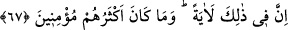
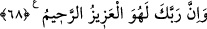

tuttu.
67. Şüphesiz bunda bir ibret vardır; ama çokları iman etmiş değillerdir.
“Şüphesiz bunda” yukarıda genişçe anlatılanlarda, özellikle Mûsâ (a.s.)’ın ve
ashabının kurtarılmasında ve Fir’avn ve kavminin suda boğulmasında ibret alanlar için
çok büyük “bir ibret vardır; ama çokları” Mısırlılar’ın çoğu, yâni Fir’avn âilesi
“iman etmiş değillerdir.”
Derler ki: Onlar içinde sadece Fir’avn’un karısı Âsiye, Hırbîl isimli mü’min ve
Meryem binti Nâmûsâ imân etmişti. Bu Meryem, Mısır’dan çıkarken Yûsûf (a.s.)’ın
kemiklerinin bulunduğu yeri/kabri gösteren kadındır.
68. Şüphesiz Rabbin, işte O, mutlak galip ve engin merhamet sahibidir.
“Şüphesiz Rabbin, işte O, mutlak galip” Fir’avn ve kavmi gibi düşmanlarından
intikâm alan “ve” Mûsâ (a.s.) ve İsrâiloğulları gibi dostlarına “engin merhamet
sahibidir.”
Fakîr (Bursevî) der ki: Bu mânâyı âyetin sevkinin/gelişinin zâhiri gerektirmektedir.
Çünkü Allah Teâlâ “Şüphesiz bunda bir ibret vardır…” ifâdesini bu sûrede sekiz
yerde zikretmiştir. Birincisi, daha önce geçtiği gibi Hz. Peygamber (a.s.) ve kavminin
zikrindedir. Gerçi Hz. Peygamber (a.s.)’ın ismi sarîh/açık değil kinâyeli olarak
geçmiştir. İkincisi, Mûsâ (a.s.)’ın kıssasında, sonra İbrâhim (a.s.)’ın, sonra Nuh
(a.s.)’ın, sonra Hûd (a.s.)’ın, sonra Sâlih (a.s.)’ın, sonra Lût (a.s.)’ın, sonra da Şuayb
(a.s.)’ın kıssasında zikredilmiştir. Bu âyetin bu kıssaların her birinin sonunda
zikredilmesi, “çokları” ile zikredilen peygamberlerden her peygamberin îman etmeyen
kavminin murâd edildiğine delâlet eder. Bu yerlerden başka âyetlerde de her ümmetten
insanların çoğunun inkâr edenler olduğu sâbit olmuştur.
Her kıssanın âyet ve ibret olması, o hâdiseyi görenlere ve kıyâmete kadar geleceklere
nisbetledir. Kureyş de onlara dâhildir. Çünkü onlar, meselâ Mûsâ ve Fir’avn kıssasını
Hz. Peygamber (a.s.)’ın lisanından işittiler. Bu da onlar için bir âyet oldu. Halbuki o
kıssayı hiç kimseden duymadan Hz. Peygamber (s.a.)’in açıklaması da îman etmeyi
gerektiren başka bir âyettir. Çünkü bu onun ancak sâdık vahiy yoluyla O’na
bildirildiğine delâlet eder.
Evet Allah Teâlâ’nın “Şüphesiz bunda bir ibret vardır.” sözü meselâ Mûsâ (a.s.) ve